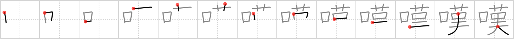

嘆
← →
sigh

Reading:
On-Yomi: タン — Kun-Yomi: なげ.く、なげ.かわしい
Heisig story:
Mouth . . . scarecrow.
Koohii stories:
1) [johnzep] 28-8-2007(245): A sigh escapes the mouth of the scarecrow, who laments: "…if I only had a brain, I could learn kanji".
2) [samuize] 19-4-2008(155): I will let out a huge sigh of relief from my mouth when I learn the last kanji.
3) [daredawg3583] 5-6-2008(31): A sigh escapes the mouth everytime I come across yet ANOTHER kanji i have to learn…
4) [Stormchild] 11-4-2007(18): A sigh escapes the mouth of the scarecrow, who laments: "…if I only had a brain.".
5) [tharvey] 27-7-2009(16): When a manga character sighs, out of his mouth comes a kanji.